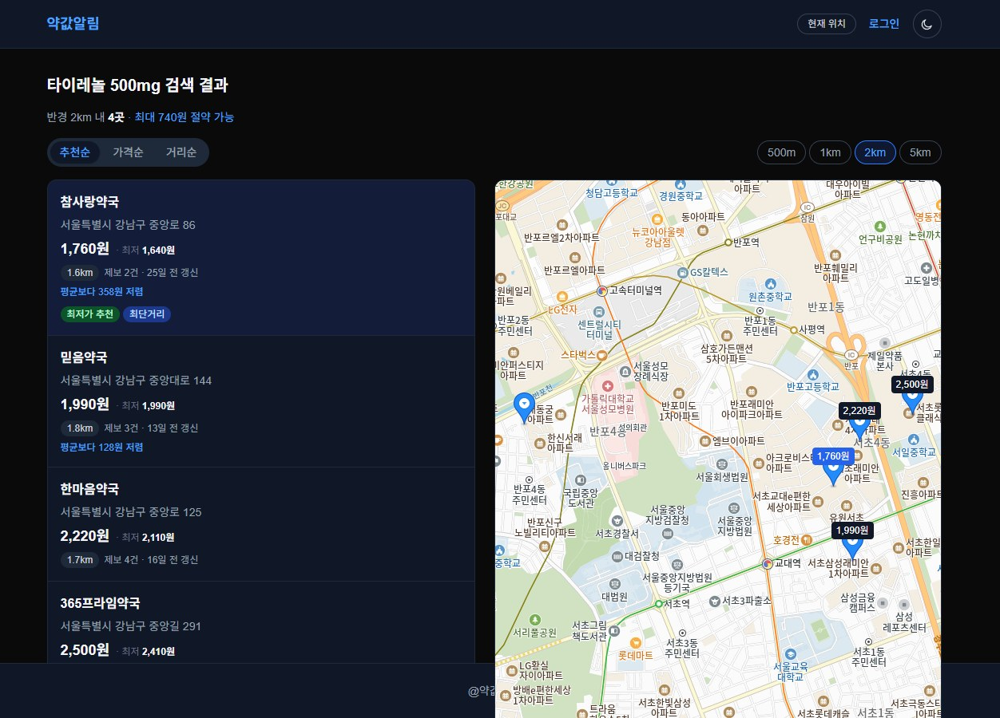

YAKFIT
약 이름으로 근처 최저가 약국을 찾는 서비스
기획부터 디자인, 프론트엔드와 백엔드까지
혼자 처음부터 만든 웹사이트예요.
검색부터 약국 비교까지
한 번에 읽히는 흐름이 목표였어요.

같은 약, 약국마다 다른 가격.
어디가 가장 쌀까?
일반 의약품은 판매자가격표시제라
같은 제품도 약국의 위치 · 임대료 · 사입 시기에 따라
최대 2배 넘게 가격이 벌어져요.
그런데 전자제품처럼 온라인으로 비교할 곳이 없어
직접 발품을 팔아야 해요.
약 이름 하나로 근처 약국의 가격을
모아 보여주는 것에서 출발했어요.
주요 기능
약 이름을 입력하면 관련 약품과
판매 약국을 바로 찾아요.
현재 위치를 기준으로 근처 약국의 가격을
지도와 목록으로 한눈에 비교해요.
타이레놀 · 게보린 · 판콜에이 등
자주 찾는 상비약을 칩 한 번으로 검색해요.
가격 · 거리 · 정보의 신선도를 함께 따진 추천순이 기본이고,
원하면 가격순 · 거리순으로 바꿔 봐요.
직접 산 가격을 제보하면
대표 가격에 바로 반영돼요.
관리자가 이상한 제보를 걸러내고,
서비스 운영 지표를 한 화면에서 확인해요.
이런 분들을 위해
타이레놀 · 소화제 같은 상비약을
조금이라도 싸게 사고 싶은 사람
정기적으로 약을 사야 해서
가격 차이에 민감한 사람
다른 물건처럼 약도
비교하고 사고 싶은 사람
첫 버전에서 완성 화면까지

BEFORE — 첫 버전 (약값알림) AFTER — 최종 (YAKFIT)
AFTER — 최종 (YAKFIT)만든 과정
문제를 정하고, 구조를 짜고,
화면을 그린 뒤 직접 개발했어요.
약값을 비교할 때 불편한 지점을 찾고,
서비스의 목표를 정했어요.
검색 → 결과 → 약국 상세로 이어지는
흐름과 화면 수를 정리했어요.
가격이 가장 먼저 읽히도록
글자 크기와 정렬, 색 규칙을 세웠어요.
프론트엔드와 백엔드·DB를 직접 연결해
실제로 동작하는 서비스로 만들었어요.
화면부터 데이터베이스까지
디자인한 화면을 직접 코드로 옮기고,
서버와 데이터베이스까지 혼자 연결했어요.
믿을 수 있는 가격을 만드는 방법
제보 가격은 들쭉날쭉해요.
그래서 대표 가격을 정하는 규칙부터 세웠어요.
최근 90일 제보에서 IQR(1.5배) 밖의 값을 걸러내고 중앙값을 대표 가격으로 써요.
90일 안에 제보가 없으면 180일까지 넓혀 다시 계산해요.
가장 싼 곳만이 아니라, 가깝고 최근에 확인된 곳이 위로 오게
세 가지를 가중합한 추천 점수로 정렬해요. 가중치는 설정 파일로 분리했어요.
제보가 들어오거나 관리자가 처리할 때 그 약국 · 약품의 대표 가격을 바로 다시 계산해 저장(upsert)해요.
검색할 때는 무거운 계산 없이 조인 한 번이면 돼요.
같은 사용자가 같은 약국 · 약품을 같은 날(KST) 두 번 제보하지 못하게 유니크 인덱스를 걸었어요.
날짜 변환을 한국 시간으로 고정해 인덱스에 쓸 수 있게 했어요.
-- 같은 사용자가 같은 (약국, 약품)에 같은 날(KST) 중복 제보하는 것을 차단
CREATE UNIQUE INDEX uq_report_user_pair_day
ON price_report (user_id, pharmacy_id, drug_id,
((created_at AT TIME ZONE 'Asia/Seoul')::date))
WHERE user_id IS NOT NULL AND status = 'ACTIVE';만들며 배운 것
PRD · API · DB 문서를 코드보다 먼저 확정해
구현 중에 설계를 다시 논의하지 않았어요.
대표 가격 · 추천 점수 로직은 테스트로 고정했어요.
제보 가격은 들쭉날쭉해서 평균을 내면 순위가 흔들렸어요.
IQR로 이상치를 거르고 중앙값을 대표가로 삼았는데,
JPA로는 표현이 안 돼 PostgreSQL SQL로 직접 짰어요.
영수증 사진에서 가격을 읽어 오는 OCR 제보와
관심 약의 가격 변동 알림 · 즐겨찾기를
더하고 싶어요.